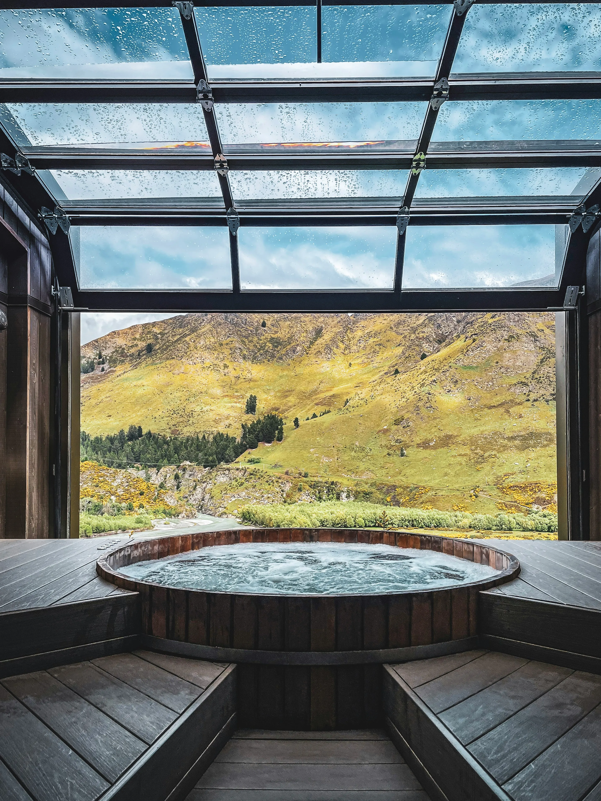

波音と、
深緑に包まれる。
CONCEPT
心ほどける、引き算の贅沢
日常の喧騒から離れ、ただ静かに流れる時間と向き合う。
かもめ温泉は、豊かな深緑の山々に囲まれ、かすかに海の薫りを感じる高台に佇む隠れ宿です。
過剰な装飾を削ぎ落とした、余白のある空間。
効能豊かな源泉と、旬の恵みを映したお料理、そして静寂という何よりの贅沢をご用意して、皆さまをお待ちしております。
GALLERY
ONSEN
源泉掛け流し、
源泉掛け流し、
美肌の湯
古くから名湯と謳われる豊かな湧出量を誇る温泉。肌に優しく滑らかな湯ざわりが特徴です。四季折々の表情を見せる深緑を眺めながら、心ゆくまでお浸かりください。
CUISINE
滋味を味わう、
滋味を味わう、
季節の恵み
地元の山海の幸をふんだんに使い、素材本来の味わいを引き出した創作和食。目にも美しい一皿一皿が、旅の夜を静かに彩ります。
FACILITIES
静寂が心地よい、
静寂が心地よい、
余白の空間
木の温もりとオフホワイトの壁が調和した館内。無駄なものを排し、窓外に広がる深緑を一枚の絵画のように引き立てる設計となっています。